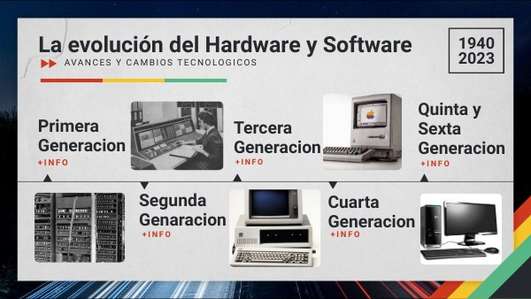

Apasionada por la tecnología y el diseño. Aquí comparto mis pensamientos, proyectos y experiencias en el mundo de la web.
En un mundo donde la tecnología avanza rápidamente, puede ser sencillo olvidar que las computadoras actuales son el resultado de décadas de innovación. Aunque hoy en día consideramos estas máquinas como comunes y parte de nuestra cotidianidad en su momento eran inimaginables para los pioneros de la computación. A medida que las herramientas se han vuelto más sofisticadas, hemos perdido el conocimiento de su funcionamiento interno y puede limitar nuestra capacidad para innovar. Por ello, es fundamental comprender el inico y que impulsa nuestras herramientas antes de explorar el fascinante universo digital.
Fecha de publicación: 31 de agosto de 2024
El hardware de una computadora comprende todos los elementos físicos que la conforman, siendo esta la parte tangible de la misma. El hardware es esencial en cualquier sistema informático, ya que brinda el soporte físico necesario para que el software funcione correctamente.
Es la base física sobre la que se construyen las operaciones de un sistema informático, entender las funciones de los distintos componentes permite mejorar el rendimiento de los sistemas informáticos en su totalidad.
Fecha de publicación: 31 de agosto de 2024
Con el paso de los años, el hardware ha experimentado avances significativos, lo que ha llevado a la creación de diferentes generaciones de tecnología que han marcado un antes y un después en la historia de la informática.
Primera generación (1945-1956): Se utilizaban tubos al vacío como componente principal en su funcionamiento. Eran enormes computadoras que funcionaban de forma primitiva en comparación con los dispositivos tecnológicos de hoy en día.
Segunda generación (1957-1963): Se desarrollaron los transistores, un avance fundamental para reducir el tamaño de las computadoras, mejorando su eficiencia y accesibilidad.
Tercera generación (1964-1971): Surgieron los circuitos integrados, que eran producidos en pastillas de silicio. Este avance revolucionario posibilitó un procesamiento de información más veloz y efectivo, señalando un punto de inflexión en el desarrollo de las computadoras.
Cuarta generación (1971-1981): Con la llegada de los microprocesadores en la década de 1970, se abrió la posibilidad de desarrollar la computadora personal (PC) en la cuarta generación de computadoras (1971-1981). La informática experimentó una revolución que llevó las computadoras de los entornos corporativos y laboratorios a los hogares y oficinas.
La "quinta generación" de hardware no tiene una definición precisa y suele hacer referencia a los avances tecnológicos surgidos después de los microprocesadores de los años 80, como la computación paralela o la inteligencia artificial. No hay acuerdo en cuanto a una generación específica para el año 2023, pero algunas tecnologías emergentes como la computación cuántica y la inteligencia artificial podrían ser consideradas parte de una eventual quinta generación.
Fecha de publicación: 31 de agosto de 2024
El hardware de una computadora se puede dividir en cinco categorías clave, dependiendo de su función específica: Estos incluyen las categorías de procesamiento, almacenamiento, entrada, salida, y también aquellos que combinan simultáneamente funciones de entrada y salida.
Procesamiento: El hardware de procesamiento incluye la CPU y la placa madre, que ejecutan las operaciones lógicas y coordinan todos los componentes internos del sistema.
Almacenamiento: El hardware de almacenamiento abarca la memoria RAM y las unidades de almacenamiento como discos duros y memorias USB, que conservan datos tanto temporal como permanentemente.
Entrada: El hardware de entrada comprende dispositivos como el teclado, el mouse, el micrófono y el escáner, que permiten al usuario introducir información en el sistema.
Salida: El hardware de salida incluye monitores, impresoras y altavoces, que muestran o proyectan la información procesada por la computadora.
Entrada y Salida Simultáneamente: Dispositivos como discos duros y memorias USB que combinan funciones de entrada y salida, permitiendo tanto la introducción como la extracción de datos.
Además de esta categorización basada en la funcionalidad, el hardware también puede ser clasificado según su relevancia en el desempeño del sistema y son:
El hardware crítico incluye los elementos fundamentales para el funcionamiento básico de una computadora, como la placa madre, la CPU, la memoria RAM, la tarjeta gráfica y la fuente de alimentación. La computadora no puede iniciar ni funcionar adecuadamente sin estos elementos. El hardware no esencial abarca elementos necesarios para el funcionamiento total del sistema, pero que no son indispensables para su inicio, como el disco duro, los dispositivos de almacenamiento externo y los periféricos como las impresoras y los altavoces.
Fecha de publicación: 31 de agosto de 2024
Me llamo Diana Esther González Salgado tengo 23 años de edad, soy estudiante de Ingeniería en Software y Datos en la IU Digital. Nací en el Estado Zulia - Venezuela y hace cinco años vivo en Colombia. Mi pasión por la tecnología, el arte y la cocina me impulsa a explorar y compartir conocimientos en el mundo digital.
Fecha de publicación: 31 de agosto de 2024
Puedes contactarme a través de mi correo electrónico: dianae2026@gmail.com